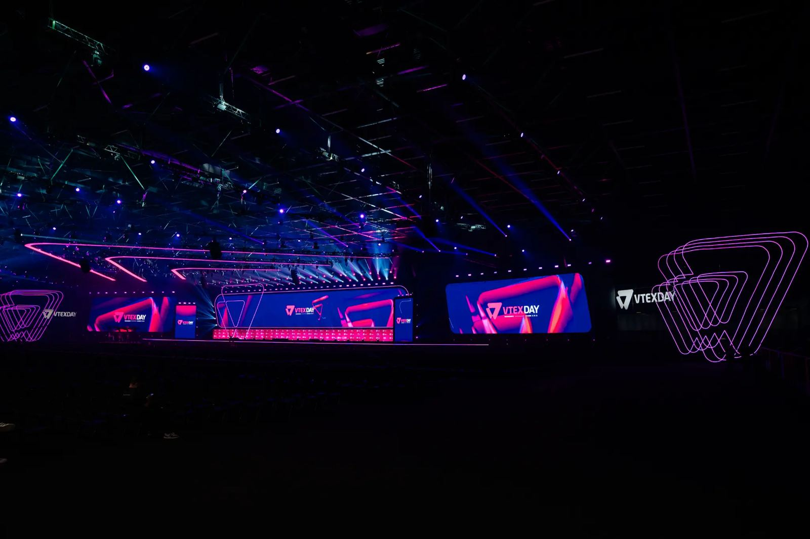

Conferences · Tech
VTEX DAY 2027
- Dates
- –
- Venue
- São Paulo Expo (plus a second venue TBA)
- Location
- São Paulo, Brazil
- Format
- In-person
- Category
- Tech
- Industry
- Digital commerce
- Organiser
- VTEX
- Expected attendance
- 40,000
- Official website
- https://www.vtex.com/pt-br/vtexday
About
Expanded to four days and two venues in 2027. Brazil dates are local (Brasília time, UTC-3, unless the venue is in another Brazilian time zone, e.g. Manaus UTC-4).
Topics: e-commerce, retail tech, AI, commerce media.
Official page: '+40 mil PARTICIPANTES' (stated for the 2027 edition).
Sources
- Official (organiser X post) — https://www.vtex.com/pt-br/vtexday
- Official (organiser X post) — https://www.vtex.com/pt-br/vtexday/faq